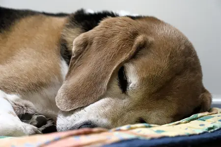
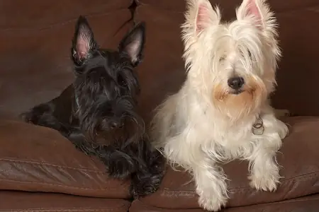
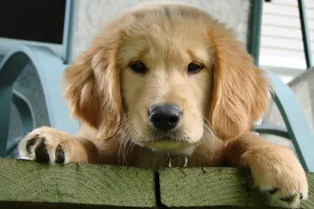
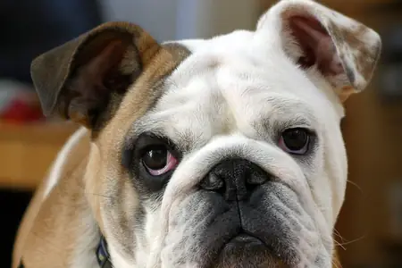
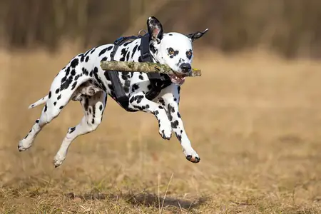
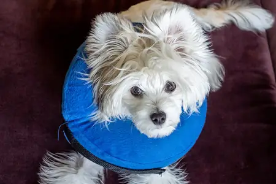
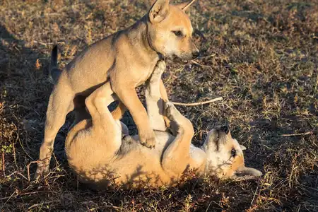
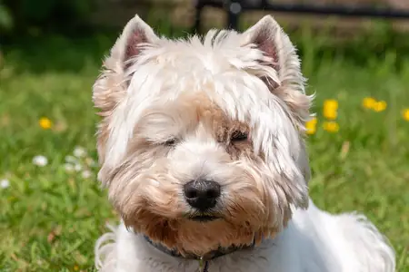

Photo credits
Every photo on SnoutsWise is used under a free licence that allows commercial use. We opened each file's own page on Wikimedia Commons to check the licence before using it, and we credit each photographer here and in the caption under the photo. We cropped, resized and converted each photo to WebP; our edited versions are shared under the same licence as the original. Photos marked CC BY or CC BY-SA require attribution; public domain photos do not, but we credit them anyway.
| Photo | File and page | Source | Author | Licence | Our changes |
|---|---|---|---|---|---|
 | Beagle sleeping in Hautmont (DSC07212).jpg Used on: care.html | Wikimedia Commons file page | Trougnouf (Benoit Brummer) | CC BY 4.0 | cropped to 3:2, resized, converted to WebP |
 | Blossom and Laysha.jpg Used on: breeds.html | Wikimedia Commons file page | Carlos Valenzuela | CC BY-SA 4.0 | cropped to 3:2, resized, converted to WebP |
 | Callie the golden retriever puppy.jpg Used on: home | Wikimedia Commons file page | MichaelMcPhee | CC BY 3.0 | cropped to 3:2, resized, converted to WebP |
 | Clyde The Bulldog.jpg Used on: can-dogs-eat.html | Wikimedia Commons file page | Asmadeus | Public domain | cropped to 3:2, resized, converted to WebP |
 | Dalmatian fetching a stick.jpg Used on: training.html | Wikimedia Commons file page | Lucasbosch | CC BY-SA 4.0 | cropped to 3:2, resized, converted to WebP |
 | Puppy with a blow-up collar (53254).jpg Used on: health.html | Wikimedia Commons file page | Rhododendrites | CC BY-SA 4.0 | cropped to 3:2, resized, converted to WebP |
 | Two puppies playing together one standing over the other at golden hour in Don Det Laos.jpg Used on: behavior.html | Wikimedia Commons file page | Basile Morin | CC BY-SA 4.0 | cropped to 3:2, resized, converted to WebP |
 | West Highland White Terrier face portrait May 2023.jpg Used on: dog-age-calculator.html | Wikimedia Commons file page | Dominic Nelson | CC BY-SA 4.0 | cropped to 3:2, resized, converted to WebP |
.jpg){kind=link}


.jpg){kind=link}


Illustrations, logo and games
The logo, paw and bone doodles, icons and all game art are original drawings made for SnoutsWise by Joshua Israel Ventures LLC. Fonts are Fredoka and Nunito from Google Fonts, both under the SIL Open Font License.
If you believe a photo is credited incorrectly, please email joshuaofisrael@gmail.com and we will fix or remove it.